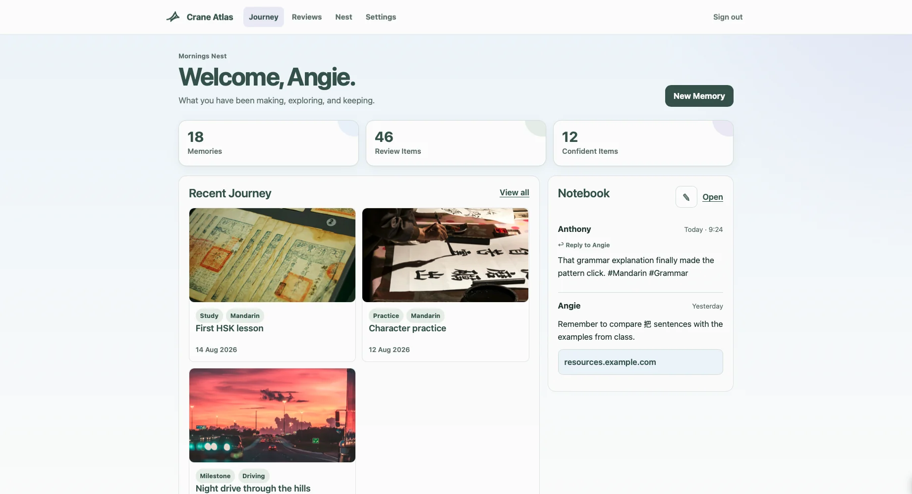

Anthony Em
Crane Atlas: What I Built, What I Kept, and Why I Retired the Hosted Version
A retrospective on building Crane Atlas from a private learning-journal idea into a full Flask application, and why the hosted version was ultimately retired while the core concept survived.
Read →